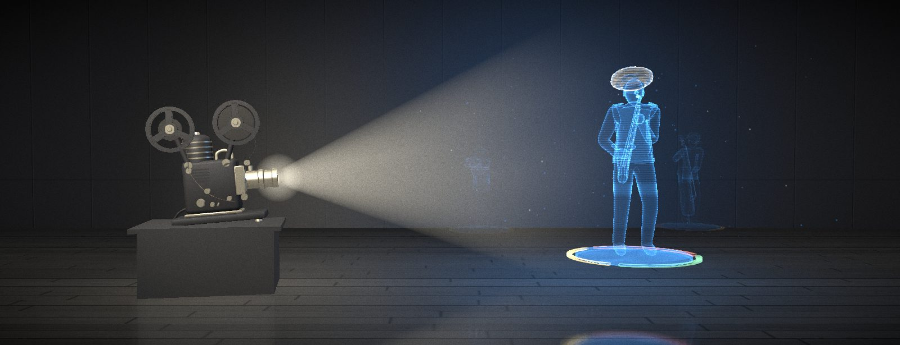

So What, a designer & developer portfolio
See the workA designer & developer portfolio
Works
01 to 05
Work
01. Bill Evans

02. Chet Baker

03. Miles Davis

04. Clifford Brown

05. John Coltrane

Contact
Have a project in mind? Send an email and let's talk.